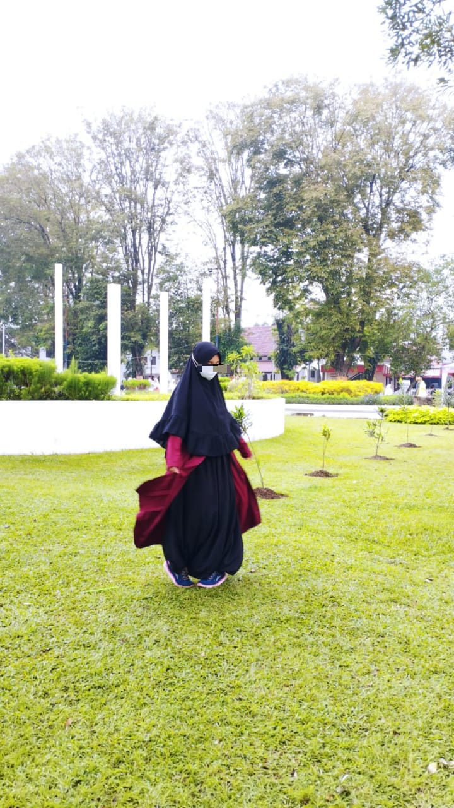

Kapan ya bisa kayak dipondok lagi,, skarng kmu udh punya suami.. gk ada waktu lagi deh buat aku
I Miss You
Jahat yang nikah duluan gk mau nungguin aku,, biar bareng gtu wkwkwkw
Assalamu'alaikum Warrohmatullahi Wabarakatu
Hey kamu yang lagi baca surat online ku, Terimakasihh banyak untuk semuanya, udah nemenin aku, marahin aku, ngambulin aku, nyeramahin aku. Itu semua sangat penting sangat berarti sangat berpengaruh untuk hidupku.
Thank you bul, udh jdi sahabatku, yang ngertiin aku, slalu ngingetin aku kalo aku salah. Tapi maaf jika slama ini blm bsa jdi sahabat yang baik buat kmu, bahkan saat acara nikahanmu aku belum bisa hadir. Maaf yaa bul.
Sekarang kamu udh aman bersama pak suami, semoga jdi keluarag yang sakinah mawadah warohmah aamiin. Medapatkan ksih sayang, keamanan, ketentraman, kenyaman samapai akhir hayat.
Maaf aku cma bisa ngasih ini ke kamu, itu pun telat. Maaafin aku ya bull. Aku bakal inget hari hari saat dipondok, sedih senang lucu. Emang kmu tu SAHABAT TERLANGKA hahahaha
Btw kepanjangan aku ngetiknya. kasian kmu yg baca. Aku list aja dh ya inti dari semua nyaa, Amiinin lo semuanya, kita gk tau mna yg bkl dikabulin kan.
Aku minta maaf bnget bul, aku gk ngasih tau kmu mslah aku kuliah 2 itu. Aku takut bul, aku msih gampang goyang, aku tkut sama responmu bul. Jujur aku jga kyk mimpi ini bsa kuliah 2, gk tau entar aku bisa lulus kedua duanya atau enggak. Doain ya bul moga aku bisa nyelesein kedu duanya. Bahkan tmn tmn yg lain gk ada yg tau jga, maaf ya bull, hrus nya aku ngasih tau. Tapi aku bnr bnr gk brani.
Semangat, jadi ibu yang baik yaa jgn galak galak wkwkw. Keep Smile because senyum adalah ibadah wkwkw, apalagi senyummu yg bisa meluluhkan hati ini. You are beautiful. You are smart woman. You are the best :)